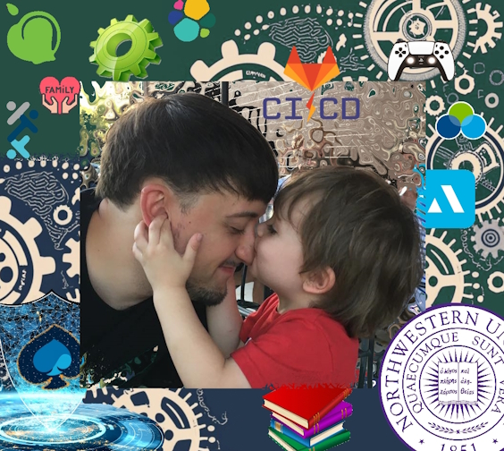

At this stage of my career, I have a proven track record of providing innovative solutions to achieve company goals, developing and deploying desktop and web applications, designing processes and procedures, mentoring junior engineers, and facilitating formal training for other colleagues. During my 5-year tenure at Capgemini, I really honed my skills in application development, cyber security, Linux administration, CI/CD strategy, and technical leadership.
I have certainly demonstrated that I possess the tenacity and determination to shine in any industry using any languages and technologies, and I would bring a wealth of knowledge and expertise to your team!